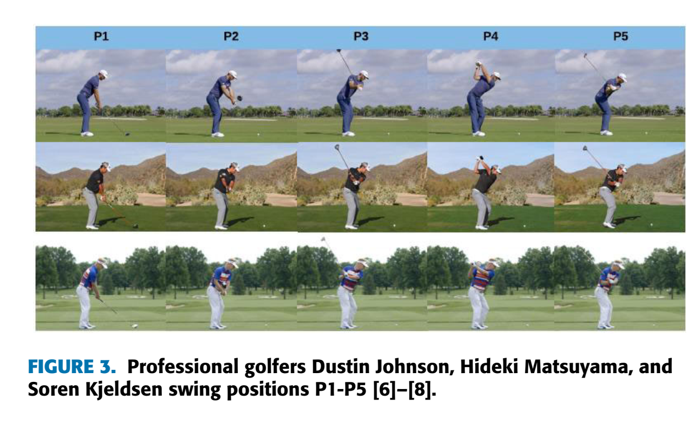
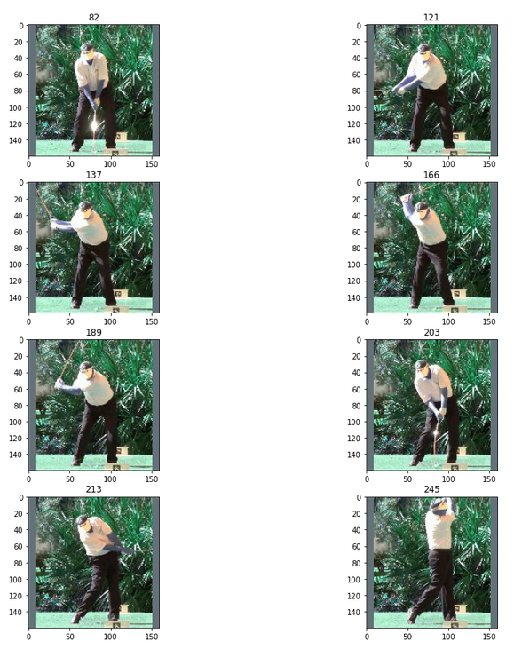

!cp -r ../input/golfdb3/* ./
stra='../input/golfdb3/test_video.mp4'
stra='../input/golfdb2/golfdb/data/videos_160/1017.mp4'
stra
Golf Swing Part II- Separating Swing Positions
Using Python to seperate golf swing into parts of the swing
- toc: true
- badges: true
- comments: true
- categories: [Neural networks,PyTourch, Golf Swing, Python]

Overview
In a previous part Part 1 a neural network model was used to find positions on the body during a golf swing. This work used images taken from videos of golf swing (analysed using the code below by the authors listed) because it is often easier to work with images rather than videos.
But to get images of the golf swing to analyse it can be useful to get them at different parts of the golf swing. This is what this part does.
Taken from https://github.com/wmcnally/golfdb and shown in the paper here https://arxiv.org/abs/1903.06528
[Ref Paper] McNally, William, et al. "Golfdb: A video database for golf swing sequencing." Proceedings of the IEEE/CVF Conference on Computer Vision and Pattern Recognition Workshops. 2019The code separates the golf swing into a number of different segments based on body and golf club positions.
This code can be run on kaggle here https://www.kaggle.com/thomassimm/golfdb-lessimports
The input is an mp3 file of a golf swing
The ouput is a series of images at different parts of the golf swing

The Code
Specify the file to use
Add downloaded directory (not always necsessary) and specify the video file.
Imports, classes and defs
Some imports. Neural nets using Torch
import scipy.io
import pandas as pd
import torch
from torch.utils.data import Dataset, DataLoader
from torchvision import transforms
# from eval import ToTensor, Normalize
# from model import EventDetector
import numpy as np
import torch.nn.functional as F
import cv2
from torch.autograd import VariableThe following classes and definitions are taken from the files in the GitHub directory
class SampleVideo(Dataset):
def __init__(self, path, input_size=160, transform=None):
self.path = path
self.input_size = input_size
self.transform = transform
def __len__(self):
return 1
def __getitem__(self, idx):
cap = cv2.VideoCapture(self.path)
frame_size = [cap.get(cv2.CAP_PROP_FRAME_HEIGHT), cap.get(cv2.CAP_PROP_FRAME_WIDTH)]
ratio = self.input_size / max(frame_size)
new_size = tuple([int(x * ratio) for x in frame_size])
delta_w = self.input_size - new_size[1]
delta_h = self.input_size - new_size[0]
top, bottom = delta_h // 2, delta_h - (delta_h // 2)
left, right = delta_w // 2, delta_w - (delta_w // 2)
# preprocess and return frames
images = []
for pos in range(int(cap.get(cv2.CAP_PROP_FRAME_COUNT))):
_, img = cap.read()
resized = cv2.resize(img, (new_size[1], new_size[0]))
b_img = cv2.copyMakeBorder(resized, top, bottom, left, right, cv2.BORDER_CONSTANT,
value=[0.406 * 255, 0.456 * 255, 0.485 * 255]) # ImageNet means (BGR)
b_img_rgb = cv2.cvtColor(b_img, cv2.COLOR_BGR2RGB)
images.append(b_img_rgb)
cap.release()
labels = np.zeros(len(images)) # only for compatibility with transforms
sample = {'images': np.asarray(images), 'labels': np.asarray(labels)}
if self.transform:
sample = self.transform(sample)
return sampleclass ToTensor(object):
"""Convert ndarrays in sample to Tensors."""
def __call__(self, sample):
images, labels = sample['images'], sample['labels']
images = images.transpose((0, 3, 1, 2))
return {'images': torch.from_numpy(images).float().div(255.),
'labels': torch.from_numpy(labels).long()}
class Normalize(object):
def __init__(self, mean, std):
self.mean = torch.tensor(mean, dtype=torch.float32)
self.std = torch.tensor(std, dtype=torch.float32)
def __call__(self, sample):
images, labels = sample['images'], sample['labels']
images.sub_(self.mean[None, :, None, None]).div_(self.std[None, :, None, None])
return {'images': images, 'labels': labels}import torch.nn as nn
import math
"""
https://github.com/tonylins/pytorch-mobilenet-v2
"""
def conv_bn(inp, oup, stride):
return nn.Sequential(
nn.Conv2d(inp, oup, 3, stride, 1, bias=False),
nn.BatchNorm2d(oup),
nn.ReLU6(inplace=True)
)
def conv_1x1_bn(inp, oup):
return nn.Sequential(
nn.Conv2d(inp, oup, 1, 1, 0, bias=False),
nn.BatchNorm2d(oup),
nn.ReLU6(inplace=True)
)
class InvertedResidual(nn.Module):
def __init__(self, inp, oup, stride, expand_ratio):
super(InvertedResidual, self).__init__()
self.stride = stride
assert stride in [1, 2]
hidden_dim = round(inp * expand_ratio)
self.use_res_connect = self.stride == 1 and inp == oup
if expand_ratio == 1:
self.conv = nn.Sequential(
# dw
nn.Conv2d(hidden_dim, hidden_dim, 3, stride, 1, groups=hidden_dim, bias=False),
nn.BatchNorm2d(hidden_dim),
nn.ReLU6(inplace=True),
# pw-linear
nn.Conv2d(hidden_dim, oup, 1, 1, 0, bias=False),
nn.BatchNorm2d(oup),
)
else:
self.conv = nn.Sequential(
# pw
nn.Conv2d(inp, hidden_dim, 1, 1, 0, bias=False),
nn.BatchNorm2d(hidden_dim),
nn.ReLU6(inplace=True),
# dw
nn.Conv2d(hidden_dim, hidden_dim, 3, stride, 1, groups=hidden_dim, bias=False),
nn.BatchNorm2d(hidden_dim),
nn.ReLU6(inplace=True),
# pw-linear
nn.Conv2d(hidden_dim, oup, 1, 1, 0, bias=False),
nn.BatchNorm2d(oup),
)
def forward(self, x):
if self.use_res_connect:
return x + self.conv(x)
else:
return self.conv(x)
class MobileNetV2(nn.Module):
def __init__(self, n_class=1000, input_size=224, width_mult=1.):
super(MobileNetV2, self).__init__()
block = InvertedResidual
min_depth = 16
input_channel = 32
last_channel = 1280
interverted_residual_setting = [
# t, c, n, s
[1, 16, 1, 1],
[6, 24, 2, 2],
[6, 32, 3, 2],
[6, 64, 4, 2],
[6, 96, 3, 1],
[6, 160, 3, 2],
[6, 320, 1, 1],
]
# building first layer
assert input_size % 32 == 0
input_channel = int(input_channel * width_mult) if width_mult >= 1.0 else input_channel
self.last_channel = int(last_channel * width_mult) if width_mult > 1.0 else last_channel
self.features = [conv_bn(3, input_channel, 2)]
# building inverted residual blocks
for t, c, n, s in interverted_residual_setting:
output_channel = max(int(c * width_mult), min_depth)
for i in range(n):
if i == 0:
self.features.append(block(input_channel, output_channel, s, expand_ratio=t))
else:
self.features.append(block(input_channel, output_channel, 1, expand_ratio=t))
input_channel = output_channel
# building last several layers
self.features.append(conv_1x1_bn(input_channel, self.last_channel))
# make it nn.Sequential
self.features = nn.Sequential(*self.features)
# building classifier
self.classifier = nn.Sequential(
nn.Dropout(0.2),
nn.Linear(self.last_channel, n_class),
)
self._initialize_weights()
def forward(self, x):
x = self.features(x)
x = x.mean(3).mean(2)
x = self.classifier(x)
return x
def _initialize_weights(self):
for m in self.modules():
if isinstance(m, nn.Conv2d):
n = m.kernel_size[0] * m.kernel_size[1] * m.out_channels
m.weight.data.normal_(0, math.sqrt(2. / n))
if m.bias is not None:
m.bias.data.zero_()
elif isinstance(m, nn.BatchNorm2d):
m.weight.data.fill_(1)
m.bias.data.zero_()
elif isinstance(m, nn.Linear):
n = m.weight.size(1)
m.weight.data.normal_(0, 0.01)
m.bias.data.zero_()import torch.nn as nn
class EventDetector(nn.Module):
def __init__(self, pretrain, width_mult, lstm_layers, lstm_hidden, bidirectional=True, dropout=True):
super(EventDetector, self).__init__()
self.width_mult = width_mult
self.lstm_layers = lstm_layers
self.lstm_hidden = lstm_hidden
self.bidirectional = bidirectional
self.dropout = dropout
net = MobileNetV2(width_mult=width_mult)
state_dict_mobilenet = torch.load('mobilenet_v2.pth.tar')
if pretrain:
net.load_state_dict(state_dict_mobilenet)
self.cnn = nn.Sequential(*list(net.children())[0][:19])
self.rnn = nn.LSTM(int(1280*width_mult if width_mult > 1.0 else 1280),
self.lstm_hidden, self.lstm_layers,
batch_first=True, bidirectional=bidirectional)
if self.bidirectional:
self.lin = nn.Linear(2*self.lstm_hidden, 9)
else:
self.lin = nn.Linear(self.lstm_hidden, 9)
if self.dropout:
self.drop = nn.Dropout(0.5)
def init_hidden(self, batch_size):
if self.bidirectional:
return (Variable(torch.zeros(2*self.lstm_layers, batch_size, self.lstm_hidden).cuda(), requires_grad=True),
Variable(torch.zeros(2*self.lstm_layers, batch_size, self.lstm_hidden).cuda(), requires_grad=True))
else:
return (Variable(torch.zeros(self.lstm_layers, batch_size, self.lstm_hidden).cuda(), requires_grad=True),
Variable(torch.zeros(self.lstm_layers, batch_size, self.lstm_hidden).cuda(), requires_grad=True))
def forward(self, x, lengths=None):
batch_size, timesteps, C, H, W = x.size()
self.hidden = self.init_hidden(batch_size)
# CNN forward
c_in = x.view(batch_size * timesteps, C, H, W)
c_out = self.cnn(c_in)
c_out = c_out.mean(3).mean(2)
if self.dropout:
c_out = self.drop(c_out)
# LSTM forward
r_in = c_out.view(batch_size, timesteps, -1)
r_out, states = self.rnn(r_in, self.hidden)
out = self.lin(r_out)
out = out.view(batch_size*timesteps,9)
return outRun the code
seq_length=64
ds = SampleVideo(stra, transform=transforms.Compose([ToTensor(),
Normalize([0.485, 0.456, 0.406],
[0.229, 0.224, 0.225])]))
dl = DataLoader(ds, batch_size=1, shuffle=False, drop_last=False)
model = EventDetector(pretrain=True,
width_mult=1.,
lstm_layers=1,
lstm_hidden=256,
bidirectional=True,
dropout=False)
try:
save_dict = torch.load('models/swingnet_1800.pth.tar')
except:
print("Model weights not found. Download model weights and place in 'models' folder. See README for instructions")
device = torch.device('cuda' if torch.cuda.is_available() else 'cpu')
print('Using device:', device)
model.load_state_dict(save_dict['model_state_dict'])
model.to(device)
model.eval()
print("Loaded model weights")
print('Testing...')
for sample in dl:
images = sample['images']
# full samples do not fit into GPU memory so evaluate sample in 'seq_length' batches
batch = 0
while batch * seq_length < images.shape[1]:
if (batch + 1) * seq_length > images.shape[1]:
image_batch = images[:, batch * seq_length:, :, :, :]
else:
image_batch = images[:, batch * seq_length:(batch + 1) * seq_length, :, :, :]
logits = model(image_batch.cuda())
if batch == 0:
probs = F.softmax(logits.data, dim=1).cpu().numpy()
else:
probs = np.append(probs, F.softmax(logits.data, dim=1).cpu().numpy(), 0)
batch += 1
events = np.argmax(probs, axis=0)[:-1]
print('Predicted event frames: {}'.format(events))
confidence = []
for i, e in enumerate(events):
confidence.append(probs[e, i])
print('Confidence: {}'.format([np.round(c, 3) for c in confidence]))Output:
Using device: cuda
Loaded model weights
Testing…
Predicted event frames: [ 82 121 137 166 189 203 213 245]
Confidence: [0.215, 0.376, 0.79, 0.767, 0.827, 0.968, 0.935, 0.247]
Plot the results
import os
##delte images
lsa=os.listdir()
fimg=[ ll for ll in lsa if ll.split('.')[-1]=='jpg']
# print(fimg)
imgs=[os.remove(ff) for ff in fimg]
fimg=[ ll for ll in lsa if ll.split('.')[-1]=='jpg']def createImages(fila,pos,nomS):
'''
Given a video file location (fila) it will save as images to a folder
Given positions in video (pos) these images from the video are saved
pos is created based on positions of swings
'''
import cv2
cap = cv2.VideoCapture(fila)
eventNom=[0,1,2,3,4,5,6,7]
for i, e in enumerate(events):
cap.set(cv2.CAP_PROP_POS_FRAMES, e)
_, img = cap.read()
cv2.imwrite(os.path.join(os.getcwd(),'_'+ nomS+'_'+"frame{:d}.jpg".format(eventNom[i])), img) # save frame as JPG file
fila=stra
pos=events
createImages(fila,pos,'10')import matplotlib.pyplot as plt
import matplotlib.image as mpimg
lsa=os.listdir()
fimg=[ ll for ll in lsa if ll.split('.')[-1]=='jpg']
fimg.sort()
imgs=[mpimg.imread(ff) for ff in fimg]cap = cv2.VideoCapture(stra)
# plt.subplot(4,2,1)
f, axs = plt.subplots(4,2,figsize=(15,15))
for i, e in enumerate(events):
cap.set(cv2.CAP_PROP_POS_FRAMES, e)
_, img = cap.read()
plt.subplot(4,2,i+1)
plt.imshow(img)
plt.title(e)